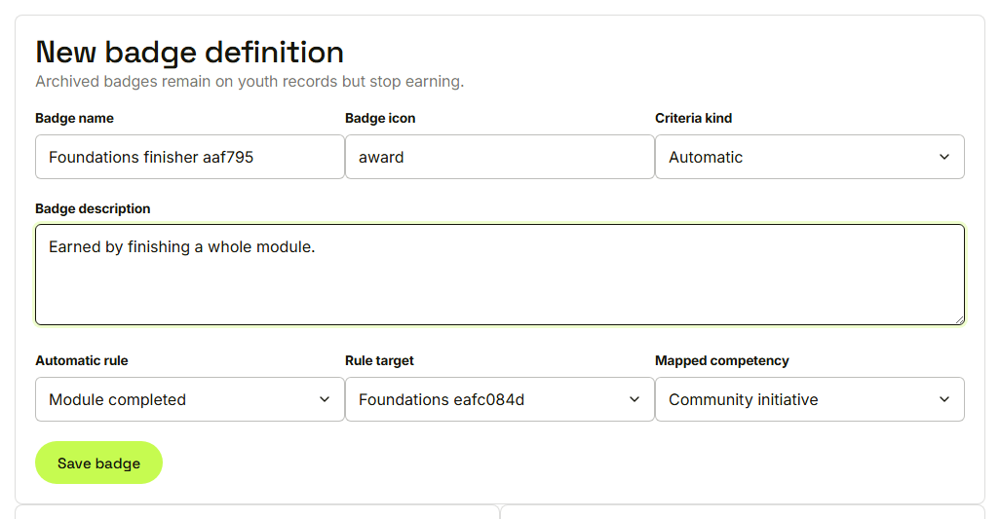
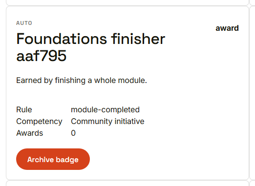
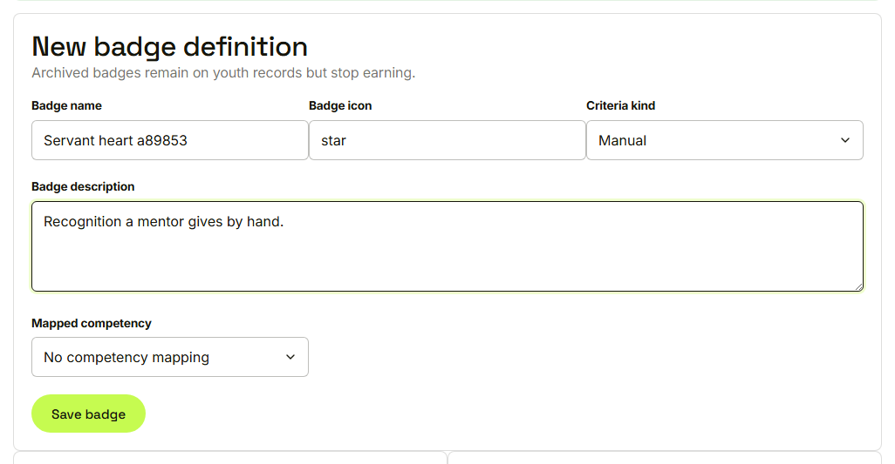
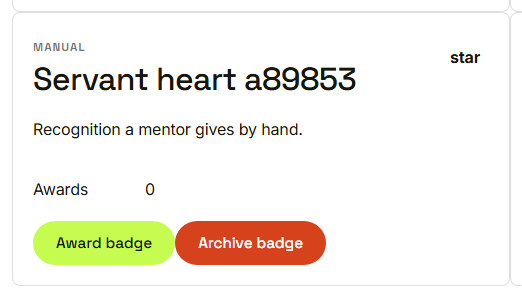
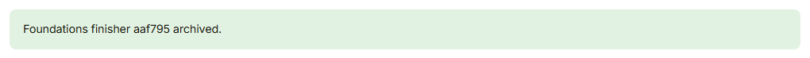

Waypoint · Video 045
Authoring badges
Automatic rules, manual awards, optional competencies
New badge definition

Name, icon, description, kind and rule
Earned automatically, exactly once

The card lists the rule, the competency and the awards
Manual: no rule to measure

The rule fields disappear
A person gives it

Award badge appears on manual badges
Archived, not taken away

Youth who earned it keep it
Things to remember
- Automatic badges follow one of five rules
- A badge can map to a competency
- Manual badges are given by a person
- Archiving stops new awards only